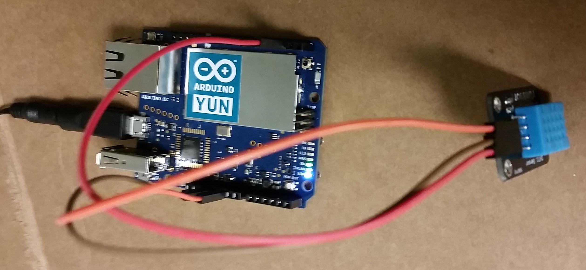

This data was taken using a microcontroller device to measure temperature and humidity in the server room at Lynnwood, Wa.
This data was feed to a web server to collect and display here.
More information can be found here:
Server Temperature and Humidity IoT Project.pdfArduino Yun microcontroller
Arduino Yun and Temp/Humidity Sensor kit placed in server room